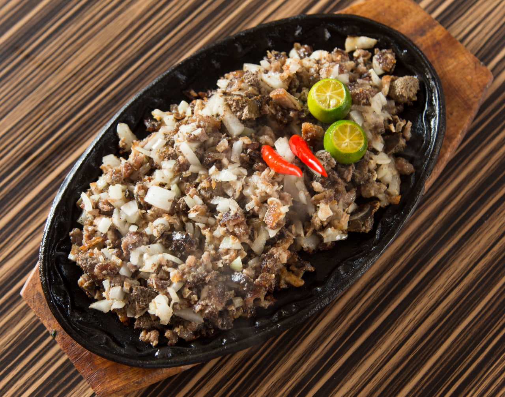

Pampanga
Sisig
Sisig is a world-renowned sizzling dish that originated in Pampanga, in the Central Luzon region. Historically created to utilize leftover parts of the pig's head, authentic Kapampangan sisig is made from boiled, broiled, and chopped pork snout, ears, and jowls, mixed with chicken liver, onions, and chili peppers. It gets its signature tanginess from calamansi. Unlike modern variations, traditional Kapampangan sisig does not contain mayonnaise or raw egg; its creamy texture comes entirely from the mashed chicken liver and the fat of the pork.

Gather
Ingredients
- Pork face (snout, ears, and jowls)
- Chicken liver
- Onions, finely chopped
- Red and green chili peppers (siling labuyo and siling haba), chopped
- Calamansi juice
- Soy sauce
- Black pepper
- Cooking oil
Make it
Recipe
- Boil the pork face in a pot of water until tender (about 1 to 1.5 hours). Drain and let it cool.
- Grill or broil the boiled pork over hot coals until the skin is charred and crispy.
- Finely chop the grilled pork into small pieces and set aside.
- In a pan, grill or fry the chicken liver until fully cooked, then mash it finely.
- In a large bowl, combine the chopped pork, mashed chicken liver, chopped onions, and chili peppers.
- Season the mixture with calamansi juice, soy sauce, and black pepper to taste. Mix thoroughly.
- To serve traditionally, heat a cast-iron sizzling plate and add a little oil.
- Transfer the sisig mixture onto the hot plate, letting it sizzle for a few minutes before serving.
- Serve hot with steamed rice and extra calamansi on the side.